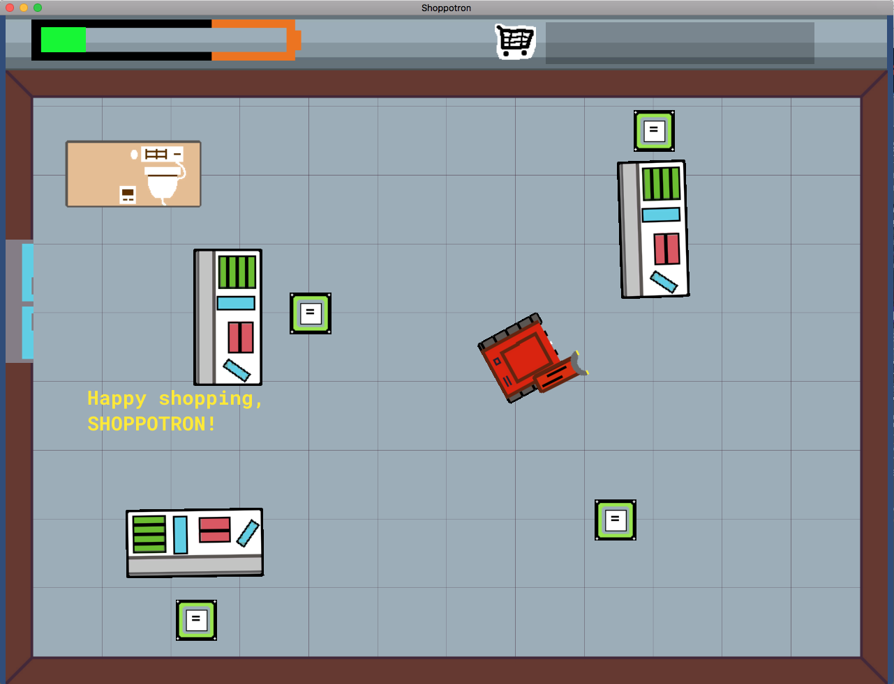

Ludum Dare 40: SHOPPOTRON
This post originally appeared on the Adorable blog.
Last weekend, I participated in Ludum Dare 40. Ludum Dare is a global game jam where participants create a game in 48–72 hours. Once your game is finished, you post it on the Ludum Dare website for people to play and review. There were three big firsts for me with this event: it was my first time making something with Unity, my first time completing a solo game project, and my first time livestreaming development (which had some technical difficulties but was still fun). Here’s a quick recap of how the weekend went.
My Game: SHOPPOTRON

The game I came up with is called SHOPPOTRON. You play as a robot who loves shopping, and your goal is to collect every item in the store and take it to the cashier before your battery drains. It’s a super simple game, and there are lots of ways I could make it better, but I’m proud of overcoming my normal perfectionism and shipping something rough out into the world.
Day 1: Brainstorming, planning, building
The event started at 8:00pm in my timezone. Since I’m an old man who can’t pull all-nighters any more, I spent about three hours getting started and then went to bed. I brainstormed game ideas based on the theme (“The more you have, the worse it is”), created a Unity project, and got a basic build working.
My walking skeleton build didn’t have anything more in it than a placeholder splash screen, but I wanted to make sure there was less chance of disaster while frantically trying to build/deploy my game at the end of the jam.
I streamed this first session on Twitch, and I’m glad I did, because one of the people in my chat made a suggestion that combined a few ideas I’d been brainstorming into what became SHOPPOTRON. Thanks, Twitch chat!
Day 2: Designing and Coding
On Saturday I woke up, had breakfast, and got back into it. They say sleeping on it is the best way to solve problems, and sure enough, I had basically all the pieces mentally in place when I sat down to work — or so I thought!
My goal for the second day was to get all of the coding done and create some placeholder assets to test with. I felt like I had a strong idea of where I was going, so I dove right in. Something pretty cool happened while I was building the test pieces, though.
I botched some Unity settings that I didn’t understand and got wonky physics on a couple of objects when they interacted. The result of this interaction was way more interesting than what I had been building. As luck would have it, I wasn’t too far into things yet to change direction, so I scrapped the code that I had and leaned into this type of physical interaction. That happy accident wound up becoming the main focus of the gameplay. Bob Ross was right!
Day 3: Drawing (and more coding)
Sunday was all about art assets. I am a horrible artist (as is evident in the final game) so this took a long time and wound up not very good. I drew all of the sprites in Aseprite, which was lots of fun to play around with.
Something I hadn’t thought about before with art is that when you’re bad at it, it’s not just that you can’t get results that look how you want. It’s also that you’re slow. I had intended to spend half a day on assets, but this wound up taking me all of Sunday.
Ultimately, I think the intentionally-wonky aesthetic works for SHOPPOTRON, but art skills are definitely something I’ll be working on before releasing my next game.
Day 4: Audio Creation and Level Design
Last day! Monday at 8pm was the deadline, so today was about pulling everything together. I started the morning out by making sound effects and music. I used Ableton Live Lite and Audacity for both tasks. I kept things super minimalist here since I don’t have any experience with audio design, but I’m actually fairly happy with the results. Just like with the art, I want to invest time in learning that skill before my next game, but for this game I like the result.
The last thing to do was level design. I had built all the component pieces, but as of lunchtime on Monday hadn’t actually put them together into a game yet. So I spent the remaining several hours of the jam slapping together 12 levels that demonstrated increasingly absurd ramifications of the game’s rules.
I got things all wrapped up around 7:00pm, shipped my builds up to itch.io for download, and wrote the description on the Ludum Dare website!
Lessons Learned
I have always had a hard time diving into things that I haven’t spent a lot of time studying beforehand, so this was great practice at breaking out of my comfort zone. Building all of the pieces of a game forced me to get comfortable fast with being out of my depth in many different ways simultaneously. I know I’ll be able to carry that forward to other things and decrease the average time it takes me to dive into things when I’m not totally confident.
I also had to make peace with shipping suboptimal and messy code. Because of the time crunch, there were several problems I knew I could solve more elegantly that I had to leave unsolved and hacked around because coming up with the “right” answer would have taken me too long. Obviously, I don’t want to start writing code this way for my day job, but it was good practice at fine-tuning my sense of when something is good enough.
Overall, Ludum Dare 40 was great fun, and I’m super glad I participated. If you haven’t done a game jam before, I highly recommend finding one that seems cool and diving in! And if you have a few spare minutes, play my game!